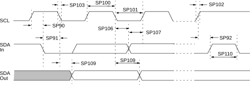

| Standard Operating Conditions (unless otherwise stated) | |||||||
|---|---|---|---|---|---|---|---|
| Param. No. | Sym. | Characteristic | Min. | Max. | Units | Conditions | |
| SP100* | THIGH | Clock high time | 100 kHz mode | 4000 | — | ns | Device must operate at a minimum of 1.5 MHz |
| 400 kHz mode | 600 | — | ns | Device must operate at a minimum of 10 MHz | |||
| 1 MHz mode | 260 | — | ns | Device must operate at a minimum of 10 MHz | |||
| SP101* | TLOW | Clock low time | 100 kHz mode | 4700 | — | ns | Device must operate at a minimum of 1.5 MHz |
| 400 kHz mode | 1300 | — | ns | Device must operate at a minimum of 10 MHz | |||
| 1 MHz mode | 500 | — | ns | Device must operate at a minimum of 10 MHz | |||
| SP102* | TR | SDA and SCL rise time | 100 kHz mode | — | 1000 | ns | |
| 400 kHz mode | 20 | 300 | ns | CB is specified to be from 10-400 pF | |||
| 1 MHz mode | — | 120 | |||||
| SP103* | TF | SDA and SCL fall time | 100 kHz mode | — | 250 | ns | |
| 400 kHz mode | 20 × (VDD/5.5V) | 250 | ns | CB is specified to be from 10-400 pF | |||
| 1 MHz mode | 20 × (VDD/5.5V) | 120 | ns | ||||
| SP106* | THD:DAT | Data input hold time | 100 kHz mode | 0 | — | ns | |
| 400 kHz mode | 0 | — | ns | ||||
| 1 MHz mode | 0 | — | ns | ||||
| SP107* | TSU:DAT | Data input setup time | 100 kHz mode | 250 | — | ns | (Note 2) |
| 400 kHz mode | 100 | — | ns | ||||
| 1 MHz mode | 50 | — | ns | ||||
| SP109* | TAA | Output valid from clock | 100 kHz mode | — | 3450 | ns | (Note 1) |
| 400 kHz mode | — | 900 | ns | ||||
| 1 MHz mode | 450 | ns | |||||
| SP110* | TBUF | Bus free time | 100 kHz mode | 4700 | — | ns | Time the bus must be free before a new transmission can start |
| 400 kHz mode | 1300 | — | ns | ||||
| 1 MHz mode | 500 | — | ns | ||||
| SP111 | CB | Bus capacitive loading | 100 kHz mode | — | 400 | pF | |
| 400 kHz mode | — | 400 | pF | ||||
| 1 MHz mode | — | 26 | pF | (Note 3) | |||
|
* These parameters are characterized but not tested. Note:
| |||||||
